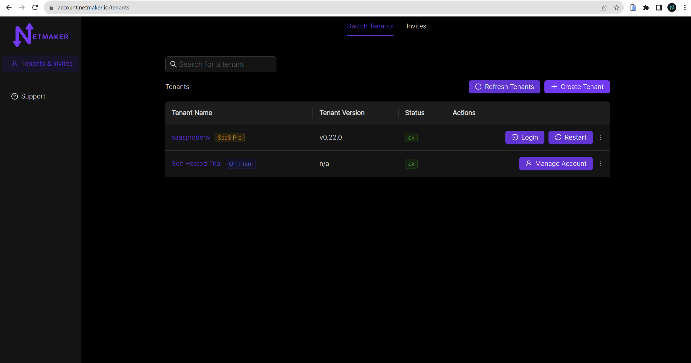
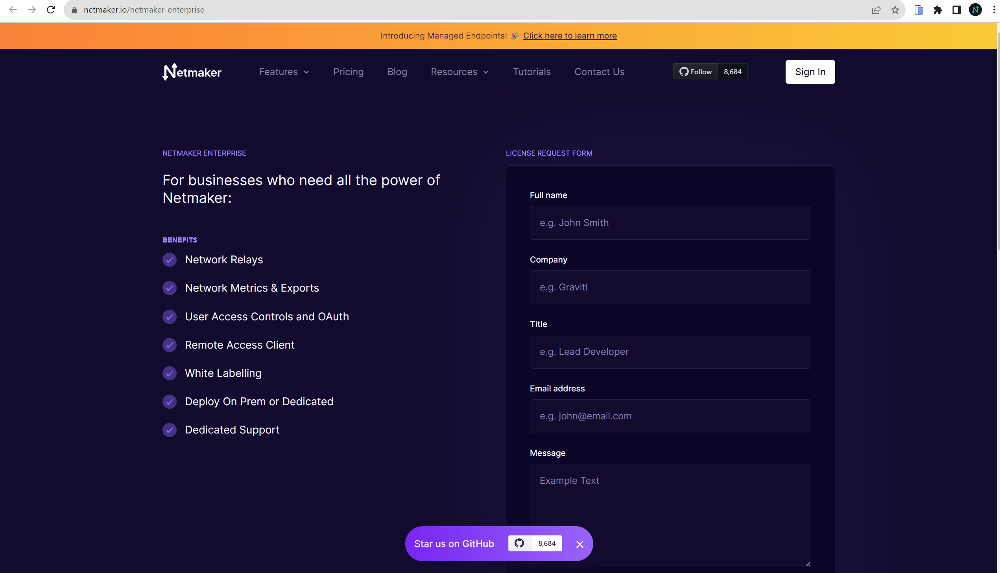

Netmaker Professional Setup
This guide covers how to get setup with Netmaker Professional. For pricing,visit our pricing page
Get a License
Visit https://app.netmaker.io to set up a self-hosted instance on the Netmaker SAAS platform. When you first visit the site, you should be prompted to create an account. After you make one, you will be automatically directed to the switch tenant dashboard.
{kind=link}
Click the `` create tenant `` button and a modal will pop up. If you are a new user you can follow the link to setup a self hosted instance of Netmaker for a free 14 day trial, for existing users click on the contact us link.

After you click on the link, you will be taken to a page to fill out a licence request form. A representative will reach out to you to get you setup with a self-hosted tenant.
{kind=link}
Once you have your tenant, you can click on manage account from the tenants table. Then you will need to add payment details before you can use your tenant, click on the stripe button to go to the stripe page and enter your payment info.
Setup your server
You will need the licence key and tenant id from the settings page back at the account management page on the settings tab.

Once you have your license key and tenant ID, you can get the nm-quick installer and run it.
wget https://raw.githubusercontent.com/gravitl/netmaker/master/scripts/nm-quick.sh
chmod +x nm-quick.sh
bash nm-quick.sh
Follow the prompts for a pro edition server. provide the license key and tenant id when prompted.
Upgrade to Pro from Community Edition
You can upgrade from an existing community server to a pro server with this script. Follow the prompts to setup a pro server and the script will make the necessary changes to your netmaker.env file and grab the pro docker-compose.override.yml file.
If you prefer to upgrade manually, go to your netmaker server and add the following to your netmaker.env file:
LICENSE_KEY=<license key>
NETMAKER_TENANT_ID=<tenant id>
Also change SERVER_IMAGE_TAG in netmaker.env to <version>-ee. For example: SERVER_IMAGE_TAG=v0.21.2-ee
Also change the INSTALL_TYPE from ce to pro.
Then you will need to get the docker-compose pro file from here
wget -O /root/docker-compose.override.yml https://raw.githubusercontent.com/gravitl/netmaker/master/compose/docker-compose.pro.yml
No changes will need to be made to that file. It will use the configs listed in your netmaker.env file.
After that run the following command:
docker kill netmaker netmaker-ui && docker-compose up -d
When you browse to your self-hosted Netmaker via dashboard.<YOUR_BASE_DOMAIN>, you should see the professional UI and a new Dashboard. The top menu bar will have relays and metrics added.

(Optional) Setup your server for Prometheus and Grafana
If you would like to use Netmaker’s custom Prometheus exporter and Grafana dashboard, your docker-compose.override.yml file will already have those section.
In Netmaker.env, change the following:
METRICS_EXPORTER=on
PROMETHEUS=on